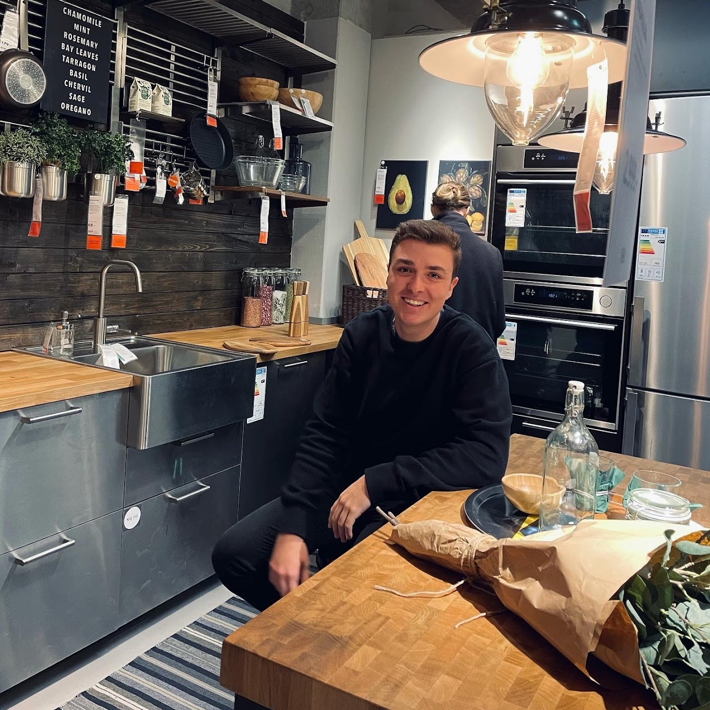

Hvem er jeg?
Mit navn er Magnus Dalkvist og jeg er 21 år. Jeg studerer multidemediedesign på KEA, hvor jeg har arbejder med alt inden for online design. Indtilvidere har jeg designet og kodet hjemmesider til offentligt og privat brug. Under min første semester har jeg arbejdet med video- og lydredigering, taget billeder, og kodet i HTML, CSS og JavaScript. Jeg har altid set mig selv som den kreative type og mine klassekammerater er med til at booste min kreativitet i hverdagen.
Uddannelse og job
Matematik/IT - H.C. Ørsted Gymnasiet 2016-2019
Senior Teknisk Rådgiver - Webhelp 2019-2020
Multidemediedesigner - Københavns Erhvervsakademi 2021-2023
Skills
Adobe CC
HTML
CSS
JavaScript